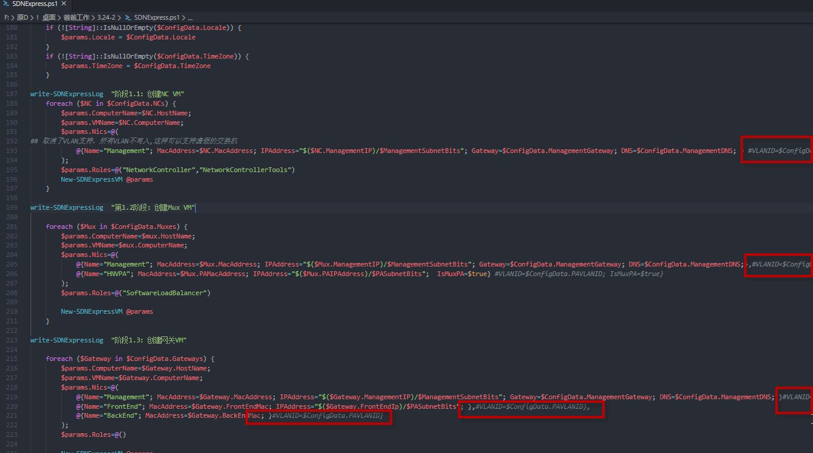

概述
SDNExpress是微软开源发布的，用以快速部署SDN基础架构的PowerShell脚本，包括NC/MUX/GW。不依赖System Center产品。
部署环境需要有足够的背景知识，请提前阅读《 使用 SDN Express 部署 SDN 基础设施》，以了解技术点。
准备
耗时
准备充分，硬件能够保障的情况下，50分左右完成了部署（32G内存，200G可用空间，I7 6820HQ）
视频
我在bilibili放了一个视频，可以点击连接直达，和本文配合阅读。 (手机版应该可以看到下面的图，电脑版看不到，很奇怪。)
硬件需求
以最小的1NC、2MUX、2GW的部署来计算，至少需要如下硬件资源。
这不是推荐配置，而是最小配置
| 资源 | 需求量 |
|---|---|
| VHD操作系统 | 10G |
| 虚拟机功能 | DC/HV主机/虚拟路由，共3台 |
| 虚拟机内存 | 2G-16G-2G |
| 网络 | 1个”内部网络”类型的虚拟交换机 |
| VLAN | 不要设置VLAN |
| 虚拟机硬盘 | 总至少130G，推荐256G |
| 虚拟化 | 开启嵌套虚拟化，开启MAC地址欺骗 |
| 嵌套虚拟机CPU内存配比 | 2C2G |
| 虚拟机 | 功能 |
|---|---|
| POCXX-DC01 | Active Directory域控制器 |
| POCXX-DCGW | 安装了RRAS角色的不加域虚拟机，用来做软路由 |
| POCXX-HV01 | 承载SDN基础架构的虚拟机，开启嵌套虚拟化 |
| 网络 | 功能 | VLAN |
|---|---|---|
| 192.148.0.0/24 | 物理主机网络 | TBD |
| 192.148.11.0/24 | 管理网络 | TBD |
| 192.148.12.0/24 | PA子网 | TBD |
| 192.148.13.0/24 | TBD | TBD |
| 192.148.14.0/24 | PrivateVIP | TBD |
| 192.148.15.0/24 | PublicVIP | TBD |
获取代码
首先获取 https://github.com/microsoft/SDN/tree/master/SDNExpress/scripts 所需的脚本。
以下流程以人肉汉化的脚本为例进行。除了内容输出和原版有差异外，其他完全一致。
前置条件准备
- 准备Windows Server 2019 with 2020 2月补丁的物理主机
- Sysprep一个VHDX文件，用来安装操作系统
- 创建一个”内部网络”类型的虚拟交换机，名称不限
- 创建一台虚拟机，命名为POCXX-DC01，至少分配2C2G。安装Active Directory域角色
- 创建一台虚拟机，命名为POCXX-DCGW，至少分配2C2G。
- 创建一台虚拟机，命名为POCXX-HV01，至少分配4C16G。开启网卡欺骗和嵌套虚拟化
准备配置文件
由于SDNExpress的安装流程依赖配置文件，配置文件可以通过GUI生成，但逐个属性介绍比较繁琐。
直接修改如下配置文件即可，注意文中注释部分，基本不需要修改
部署出来的虚拟机时区和跑脚本的主机一致，所以在跑脚本之前，需要先正确配置时间
1
2
3
4
5
6
7
8
9
10
11
12
13
14
15
16
17
18
19
20
21
22
23
24
25
26
27
28
29
30
31
32
33
34
35
36
37
38
39
40
41
42
43
44
45
46
47
48
49
50
51
52
53
54
55
56
57
58
59
60
61
62
63
64
65
66
67
68
69
70
71
72
73
74
75
76
77
78
79
80
81
82
83
84
85
86
87
88
89
90
91
92
93
94
95
96
97
98
99
100
101
102
103
104
105
106
107
108
109
110
111
## 如果准备的VHDX文件是图形界面的话，一定要输入AVMA的key。Core模式则无所谓
## 此处指定了VLAN，除非在生产环境部署，否则不需要关心此处
@{
ScriptVersion = '2.0'
VHDPath = 'C:\HV'
VHDFile = 'TemplateVHDXGUI.vhdx'
VMLocation = 'c:\hv'
JoinDomain = 'contoso.com'
## 2019 AVMA的序列号
ProductKey ="H3RNG-8C32Q-Q8FRX-6TDXV-WMBMW"
## 不指定硬件配置，此处默认为8C8G
VMMemory=2GB
VMProcessorCount=4
ManagementVLANID = '11'
ManagementSubnet = '192.148.11.0/24'
ManagementGateway = '192.148.11.1'
ManagementDNS = @(
'192.148.0.2'
)
## 此处加域密码、本地密码均被删除，只有通过GUI界面生成配置文件后，才能保存密码。此处注释掉密码，脚本部署过程中，会要求输入密码，根据提示输入即可。
DomainJoinUsername = 'contoso\administrator'
LocalAdminDomainUser = 'contoso\administrator'
#NCFC的终结点地址
RestName = 'ncfcnew.contoso.com'
#工作的HV主机列表，支持数组，此处使用pocxx-hv01
HyperVHosts = @('pocxx-hv01' )
NCs = @(
@{
ComputerName = 'pocxNC01'
HostName = 'pocxx-hv01'
ManagementIP = '192.148.11.30'
MACAddress = '00:1D:D8:B7:1C:00'
}
)
Muxes = @(
@{
ComputerName = 'pocxMux01'
HostName = 'pocxx-hv01'
ManagementIP = '192.148.11.31'
MACAddress = '00-1D-D8-B7-1C-01'
PAIPAddress = '192.148.12.81'
PAMACAddress = '00-1D-D8-B7-1C-02'
},
@{
ComputerName = 'pocxMux02'
HostName = 'pocxx-hv01'
ManagementIP = '192.148.11.32'
MACAddress = '00-1D-D8-B7-1C-03'
PAIPAddress = '192.148.12.82'
PAMACAddress = '00-1D-D8-B7-1C-04'
}
)
Gateways = @(
@{
ComputerName = 'pocxGW01'
HostName = 'pocxx-hv01'
ManagementIP = '192.148.11.33'
MACAddress = '00-1D-D8-B7-1C-05'
FrontEndIp = '192.148.12.83'
FrontEndMac = '00-1D-D8-B7-1C-06'
BackEndMac = '00-1D-D8-B7-1C-07'
},
@{
ComputerName = 'pocxGW02'
HostName = 'pocxx-hv01'
ManagementIP = '192.148.11.34'
MACAddress = '00-1D-D8-B7-1C-08'
FrontEndIp = '192.148.12.84'
FrontEndMac = '00-1D-D8-B7-1C-09'
BackEndMac = '00-1D-D8-B7-1C-0A'
}
)
## NC的密码被删除，需要在输入环节中输入。
NCUsername = 'contoso\administrator'
PAVLANID = '12'
PASubnet = '192.148.12.0/24'
PAGateway = '192.148.12.1'
PAPoolStart = '192.148.12.83'
PAPoolEnd = '192.148.12.140'
SDNMacPoolStart = '00-1D-D8-B7-1C-0B'
SDNMacPoolEnd = '00:1D:D8:B7:1F:FF'
## BGP相关配置
SDNASN = '65001'
Routers = @(
@{
RouterASN = '65002'
RouterIPAddress = '192.148.17.1'
}
)
PrivateVIPSubnet = '192.148.14.0/24'
PublicVIPSubnet = '192.148.15.0/24'
PoolName = 'DefaultAll'
GRESubnet = '192.148.16.0/24'
Capacity = '10000'
}
禁用VLAN功能
由于在嵌套虚拟化环境中测试，网络不能带有VLAN标签，而SDNExpress的脚本默认会启用VLAN功能，且图形界面下为强制选项。
注释掉脚本相关部分会简单一些。
从193行开始，图片中标注的几个部分已经被注释。

部署
配置软路由
由于部署过程需要使用到很多个网段，不同网段之间没有网络设备是不通的。除非拥有BGP交换设备和足够的物理主机，否则不应在环境中配置VLAN。
使用脚本完成软路由配置，利用到PowerShell Direct功能，相对比较快速。配置要点请关注注释部分
1
2
3
4
5
6
7
8
9
10
11
12
13
14
15
16
17
18
19
20
21
22
23
24
25
26
27
28
29
30
31
32
33
34
35
36
37
38
39
40
41
42
43
44
45
46
47
48
49
#输入DCGW的账号密码
$cred=Get-Credential
$vmname="pocxx-dcgw"
#验证主机是否已开机
icm -VMName $vmname -Credential $cred {$env:COMPUTERNAME}
#安装RRAS，大概率不需要重启。
icm -VMName $vmname -Credential $cred {Install-WindowsFeature RemoteAccess -IncludeAllSubFeature -IncludeManagementTools -Restart}
#创建检查点
Get-VM -Name $vmname |Checkpoint-VM -SnapshotName "完成功能安装"
#给默认网卡改名和IP，在初次部署的时候完成修改也可以
icm -VMName $vmname -Credential $cred {
Get-NetAdapter |Rename-NetAdapter -NewName "0"
$themac = (Get-NetAdapter).MacAddress.replace('-',':')
$wmi = Get-WmiObject win32_networkadapterconfiguration | ?{ $_.macaddress -eq $themac }
$wmi.EnableStatic("192.148.0.1", "255.255.255.0");
$wmi.SetGateways("192.148.0.1", 1);
$wmi.SetDNSServerSearchOrder("192.148.0.2");
}
#增加5张网卡，设置VLAN，在虚拟机内部，将其改名。由于WMI调用的问题，出错之后，不见得可以重新配置
11..15|%{
$tempx=$_
Add-VMNetworkAdapter -SwitchName POC -Name $tempx -VMName $vmname
#这里VLANID是没有意义的，不用配置
#Set-VMNetworkAdapterVlan -VMName $vmname -VMNetworkAdapterName $tempx -VlanId 1000 -Access
icm -VMName $vmname -Credential $cred {Get-NetAdapter -Name "以太网*" |Rename-NetAdapter -NewName $using:tempx
#设置IP地址，以及配置掩码
$IPtemp="192.148."+$using:tempx+".1"
New-NetIPAddress -InterfaceAlias $using:tempx -AddressFamily IPv4 -IPAddress $IPtemp
Set-NetIPAddress -InterfaceAlias $using:tempx -AddressFamily IPv4 -PrefixLength 24
sleep 1
}
}
#创建检查点
Get-VM -Name $vmname |Checkpoint-VM -SnapshotName "完成网卡配置"
#检查名称和VLAN配置
Get-VMNetworkAdapterVlan -VMName $vmname
#关闭防火墙
icm -VMName $vmname -Credential $cred {Set-NetFirewallProfile -Enabled False}
#无图形界面，仅开启路由功能
icm -VMName $vmname -Credential $cred {Install-RemoteAccess -VpnType RoutingOnly }
确认准备好的内容
- 此时应该有3台虚拟机，位于同一台物理主机上
- 1台AD，域名为 contoso.com
- 1台软路由，没有加域
- 1台开启嵌套虚拟化的虚拟机，安装Hyper-V角色，并保证有足够的可用磁盘空间和内存
- 另外注意，这台嵌套虚拟化虚拟机，要开启
MAC欺骗，以及在这个虚拟机内要创建一个外部交换机 - 3台虚拟机位于同一个物理主机上
- 一个Syspre后的叫做
TemplateVHDXGUI的VHDX文件位于C:\hv目录下
注意事项：
- 仅仅在
嵌套虚拟化中测试完成 - 现在看起来似乎物理主机上，
只有一张网卡连接网线才能部署成功。 - 物理主机能否使用脚本，和网卡型号、驱动
均有关联。 - Domain Admin需要隶属于DNS admins
运行脚本
在Scripts脚本目录中，管理员PowerShell下运行如下命令
1
PS C:\scripts> .\SDNExpress.ps1 -ConfigurationDataFile '.\peizhi 1.psd1'
## 日志记录 如果正确部署的话，日志大概是这个样子的。由于代码进行了汉化，输出内容也基本都是中文的。
从日志大致也能看出，部署分为多个部分，因此在测试阶段，我们也可以有目的的分开执行。例如第一部分部署虚拟机，大约会耗时15分钟，此处如果单独执行，成功后即进行快照，可以节省部署失败后重来的时间。配置NC环节，大致需要10分钟，此处也可以同样的分步骤进行执行。
另外日志最后的部分，提示MUX还存在问题，这是正常的，只有提前根据BGP的信息配置peer后，这里才会连接成功。
1
2
3
4
5
6
7
8
9
10
11
12
13
14
15
16
17
18
19
20
21
22
23
24
25
26
27
28
29
30
31
32
33
34
35
36
37
38
39
40
41
42
43
44
45
46
47
48
49
50
51
52
53
54
55
56
57
58
59
60
61
62
63
64
65
66
67
68
69
70
71
72
73
74
75
76
77
78
79
80
81
82
83
84
85
86
87
88
89
90
91
92
93
94
95
96
97
98
99
100
101
102
103
104
105
106
107
108
109
110
111
112
113
114
115
116
117
118
119
120
121
122
123
124
125
126
127
128
129
130
131
132
133
134
135
136
137
138
139
140
141
142
143
144
145
146
147
148
149
150
151
152
153
154
155
156
157
158
159
160
161
162
163
164
165
166
167
168
169
170
171
172
173
174
175
176
177
178
179
180
181
182
183
184
185
186
187
188
189
190
191
192
193
194
195
196
197
198
199
200
201
202
203
204
205
206
207
208
209
210
211
212
213
214
215
216
217
218
219
220
221
222
223
224
225
226
227
228
229
230
231
232
233
234
235
236
237
238
239
240
241
242
243
244
245
246
247
248
249
250
251
252
253
254
255
256
257
258
259
260
261
262
263
264
265
266
267
268
269
270
271
272
273
274
275
276
277
278
279
280
281
282
283
284
285
286
287
288
289
290
291
292
293
294
295
296
297
298
299
300
301
302
303
304
305
306
307
308
309
310
311
312
313
314
315
316
317
318
319
320
321
322
323
324
325
326
327
328
329
330
331
332
333
334
335
336
337
338
339
340
341
342
343
344
345
346
347
348
349
350
351
352
353
354
355
356
357
358
359
360
361
362
363
364
365
366
367
368
369
370
371
372
373
374
375
376
377
378
379
380
381
382
383
384
385
386
387
388
389
390
391
392
393
394
395
396
397
398
399
400
401
402
403
404
405
406
407
408
409
410
411
412
413
414
415
416
417
418
419
420
421
422
423
424
425
426
427
428
429
430
431
432
433
434
435
436
437
438
439
440
441
442
443
444
445
446
447
448
449
450
451
452
453
454
455
456
457
458
459
460
461
462
463
464
465
466
467
468
469
470
471
472
473
[20200324-16:53:33] ***开始SDN Express部署***
[20200324-16:53:33] 参数集：ConfigurationFile
[20200324-16:53:33] -ConfigurationDataFile：.\peizhi 1.psd1
[20200324-16:53:33] -ConfigurationData：
[20200324-16:53:33] -SkipValidation：False
[20200324-16:53:34] -SkipDeployment：False
[20200324-16:53:34] 使用通过参数传入的配置文件.
[20200324-16:53:34] 在命令行或配置文件中找不到凭据.提示.
[20200324-16:55:37] 在命令行中使用凭据.
[20200324-16:55:37] 在命令行或配置文件中找不到凭据.提示.
[20200324-16:55:39] 在命令行中使用凭据.
[20200324-16:55:39] 在命令行或配置文件中找不到凭据.提示.
[20200324-16:55:40] 在命令行中使用凭据.
[20200324-16:55:40] 阶段1：创建VM
[20200324-16:55:40] 阶段1.1：创建NC VM
[20200324-16:55:40] 新的SDNExpressVM
[20200324-16:55:40] -ComputerName:pocxx-hv01
[20200324-16:55:40] -VMLocation:c:\hv
[20200324-16:55:40] -VMName:pocxNC01
[20200324-16:55:40] -VHDSrcPath:C:\HV
[20200324-16:55:40] -VHDName:TemplateVHDXGUI.vhdx
[20200324-16:55:40] -VMMemory:2147483648
[20200324-16:55:40] -SwitchName:
[20200324-16:55:40] -Nics:
[20200324-16:55:40] Management, Mac:00:1D:D8:B7:1C:00, IP:192.148.11.30/24, GW:192.148.11.1, DNS:192.148.0.2, VLAN:
[20200324-16:55:40] -CredentialDomain:contoso
[20200324-16:55:40] -CredentialUserName:administrator
[20200324-16:55:40] -CredentialPassword:********
[20200324-16:55:40] -JoinDomain:contoso.com
[20200324-16:55:40] -LocalAdminPassword:********
[20200324-16:55:40] -DomainAdminDomain:contoso
[20200324-16:55:40] -DomainAdminUserName:administrator
[20200324-16:55:40] -产品密钥: ********
[20200324-16:55:40] -VMProcessorCount:4
[20200324-16:55:40] -Locale:zh-CN
[20200324-16:55:40] -TimeZone:China Standard Time
[20200324-16:55:40] -角色:NetworkController NetworkControllerTools
[20200324-16:55:42] 检查pocxx-hv01 上的路径是否为CSV.
[20200324-16:55:43] 路径不是CSV.
[20200324-16:55:43] 将\\pocxx-hv01\VMShare\pocxNC01 用作VHD复制的目标.
[20200324-16:55:43] 正在检查以前安装的映像.
[20200324-16:55:44] 查找虚拟交换机.
[20200324-16:55:44] 将VM附加到虚拟交换机:POC
[20200324-16:55:44] 创建VM根目录并在主机上共享.
[20200324-16:55:46] 创建VM目录并复制VHD.这可能需要几分钟.
[20200324-16:55:46] 从\\pocxx-hv01\VMShare\pocxNC01
[20200324-16:56:44] 创建安装目录并安装VHD.
[20200324-16:56:52] 离线添加角色(NetworkController NetworkControllerTools)以保存以后的重启
[20200324-16:57:39] 生成unattend.xml
[20200324-16:57:39] 将unattend.xml写入C:\Users\Administrator\AppData\Local\Temp\tmp4EEC.tmp \ unattend.xml
[20200324-16:57:39] 打扫干净
[20200324-16:57:46] 创建虚拟机:pocxx-hv01
[20200324-16:57:50] New-SDNExpressVM已完成.
[20200324-16:57:50] 第1.2阶段：创建Mux VM
[20200324-16:57:50] 新的SDNExpressVM
[20200324-16:57:50] -ComputerName:pocxx-hv01
[20200324-16:57:50] -VMLocation:c:\hv
[20200324-16:57:50] -VMName:pocxMux01
[20200324-16:57:50] -VHDSrcPath:C:\HV
[20200324-16:57:50] -VHDName:TemplateVHDXGUI.vhdx
[20200324-16:57:50] -VMMemory:2147483648
[20200324-16:57:50] -SwitchName:
[20200324-16:57:50] -Nics:
[20200324-16:57:50] Management, Mac:00-1D-D8-B7-1C-01, IP:192.148.11.31/24, GW:192.148.11.1, DNS:192.148.0.2, VLAN:
[20200324-16:57:50] HNVPA, Mac:00-1D-D8-B7-1C-02, IP:192.148.12.81/24, GW:, DNS:, VLAN:
[20200324-16:57:50] -CredentialDomain:contoso
[20200324-16:57:50] -CredentialUserName:administrator
[20200324-16:57:50] -CredentialPassword:********
[20200324-16:57:50] -JoinDomain:contoso.com
[20200324-16:57:50] -LocalAdminPassword:********
[20200324-16:57:50] -DomainAdminDomain:contoso
[20200324-16:57:50] -DomainAdminUserName:administrator
[20200324-16:57:50] -产品密钥: ********
[20200324-16:57:50] -VMProcessorCount:4
[20200324-16:57:50] -Locale:zh-CN
[20200324-16:57:50] -TimeZone:China Standard Time
[20200324-16:57:50] -角色:SoftwareLoadBalancer
[20200324-16:57:51] 检查pocxx-hv01 上的路径是否为CSV.
[20200324-16:57:52] 路径不是CSV.
[20200324-16:57:52] 将\\pocxx-hv01\VMShare\pocxMux01 用作VHD复制的目标.
[20200324-16:57:52] 正在检查以前安装的映像.
[20200324-16:57:52] 查找虚拟交换机.
[20200324-16:57:53] 将VM附加到虚拟交换机:POC
[20200324-16:57:53] 创建VM根目录并在主机上共享.
[20200324-16:57:54] 创建VM目录并复制VHD.这可能需要几分钟.
[20200324-16:57:54] 从\\pocxx-hv01\VMShare\pocxMux01
[20200324-16:58:42] 创建安装目录并安装VHD.
[20200324-16:59:02] 离线添加角色(SoftwareLoadBalancer)以保存以后的重启
[20200324-16:59:30] 生成unattend.xml
[20200324-16:59:30] 将unattend.xml写入C:\Users\Administrator\AppData\Local\Temp\tmp1B31.tmp \ unattend.xml
[20200324-16:59:30] 打扫干净
[20200324-17:02:37] 创建虚拟机:pocxx-hv01
[20200324-17:02:41] New-SDNExpressVM已完成.
[20200324-17:02:41] 新的SDNExpressVM
[20200324-17:02:41] -ComputerName:pocxx-hv01
[20200324-17:02:41] -VMLocation:c:\hv
[20200324-17:02:41] -VMName:pocxMux02
[20200324-17:02:41] -VHDSrcPath:C:\HV
[20200324-17:02:41] -VHDName:TemplateVHDXGUI.vhdx
[20200324-17:02:41] -VMMemory:2147483648
[20200324-17:02:41] -SwitchName:
[20200324-17:02:41] -Nics:
[20200324-17:02:41] Management, Mac:00-1D-D8-B7-1C-03, IP:192.148.11.32/24, GW:192.148.11.1, DNS:192.148.0.2, VLAN:
[20200324-17:02:41] HNVPA, Mac:00-1D-D8-B7-1C-04, IP:192.148.12.82/24, GW:, DNS:, VLAN:
[20200324-17:02:41] -CredentialDomain:contoso
[20200324-17:02:41] -CredentialUserName:administrator
[20200324-17:02:41] -CredentialPassword:********
[20200324-17:02:41] -JoinDomain:contoso.com
[20200324-17:02:41] -LocalAdminPassword:********
[20200324-17:02:41] -DomainAdminDomain:contoso
[20200324-17:02:41] -DomainAdminUserName:administrator
[20200324-17:02:41] -产品密钥: ********
[20200324-17:02:41] -VMProcessorCount:4
[20200324-17:02:41] -Locale:zh-CN
[20200324-17:02:41] -TimeZone:China Standard Time
[20200324-17:02:41] -角色:SoftwareLoadBalancer
[20200324-17:02:43] 检查pocxx-hv01 上的路径是否为CSV.
[20200324-17:02:44] 路径不是CSV.
[20200324-17:02:44] 将\\pocxx-hv01\VMShare\pocxMux02 用作VHD复制的目标.
[20200324-17:02:44] 正在检查以前安装的映像.
[20200324-17:02:44] 查找虚拟交换机.
[20200324-17:02:44] 将VM附加到虚拟交换机:POC
[20200324-17:02:44] 创建VM根目录并在主机上共享.
[20200324-17:02:46] 创建VM目录并复制VHD.这可能需要几分钟.
[20200324-17:02:46] 从\\pocxx-hv01\VMShare\pocxMux02
[20200324-17:03:29] 创建安装目录并安装VHD.
[20200324-17:03:53] 离线添加角色(SoftwareLoadBalancer)以保存以后的重启
[20200324-17:04:20] 生成unattend.xml
[20200324-17:04:20] 将unattend.xml写入C:\Users\Administrator\AppData\Local\Temp\tmp7D15.tmp \ unattend.xml
[20200324-17:04:20] 打扫干净
[20200324-17:04:29] 创建虚拟机:pocxx-hv01
[20200324-17:04:34] New-SDNExpressVM已完成.
[20200324-17:04:34] 阶段1.3：创建网关VM
[20200324-17:04:34] 新的SDNExpressVM
[20200324-17:04:34] -ComputerName:pocxx-hv01
[20200324-17:04:34] -VMLocation:c:\hv
[20200324-17:04:34] -VMName:pocxGW01
[20200324-17:04:34] -VHDSrcPath:C:\HV
[20200324-17:04:34] -VHDName:TemplateVHDXGUI.vhdx
[20200324-17:04:34] -VMMemory:2147483648
[20200324-17:04:34] -SwitchName:
[20200324-17:04:34] -Nics:
[20200324-17:04:34] Management, Mac:00-1D-D8-B7-1C-05, IP:192.148.11.33/24, GW:192.148.11.1, DNS:192.148.0.2, VLAN:
[20200324-17:04:34] FrontEnd, Mac:00-1D-D8-B7-1C-06, IP:192.148.12.83/24, GW:, DNS:, VLAN:
[20200324-17:04:34] BackEnd, Mac:00-1D-D8-B7-1C-07, IP:, GW:, DNS:, VLAN:
[20200324-17:04:34] -CredentialDomain:contoso
[20200324-17:04:34] -CredentialUserName:administrator
[20200324-17:04:34] -CredentialPassword:********
[20200324-17:04:34] -JoinDomain:contoso.com
[20200324-17:04:34] -LocalAdminPassword:********
[20200324-17:04:34] -DomainAdminDomain:contoso
[20200324-17:04:34] -DomainAdminUserName:administrator
[20200324-17:04:34] -产品密钥: ********
[20200324-17:04:34] -VMProcessorCount:4
[20200324-17:04:34] -Locale:zh-CN
[20200324-17:04:34] -TimeZone:China Standard Time
[20200324-17:04:34] -角色:
[20200324-17:04:36] 检查pocxx-hv01 上的路径是否为CSV.
[20200324-17:04:37] 路径不是CSV.
[20200324-17:04:37] 将\\pocxx-hv01\VMShare\pocxGW01 用作VHD复制的目标.
[20200324-17:04:37] 正在检查以前安装的映像.
[20200324-17:04:37] 查找虚拟交换机.
[20200324-17:04:38] 将VM附加到虚拟交换机:POC
[20200324-17:04:38] 创建VM根目录并在主机上共享.
[20200324-17:04:39] 创建VM目录并复制VHD.这可能需要几分钟.
[20200324-17:04:39] 从\\pocxx-hv01\VMShare\pocxGW01
[20200324-17:05:49] 创建安装目录并安装VHD.
[20200324-17:05:56] 生成unattend.xml
[20200324-17:05:56] 将unattend.xml写入C:\Users\Administrator\AppData\Local\Temp\tmpA0D1.tmp \ unattend.xml
[20200324-17:05:56] 打扫干净
[20200324-17:06:02] 创建虚拟机:pocxx-hv01
[20200324-17:06:07] New-SDNExpressVM已完成.
[20200324-17:06:07] 新的SDNExpressVM
[20200324-17:06:07] -ComputerName:pocxx-hv01
[20200324-17:06:07] -VMLocation:c:\hv
[20200324-17:06:07] -VMName:pocxGW02
[20200324-17:06:07] -VHDSrcPath:C:\HV
[20200324-17:06:07] -VHDName:TemplateVHDXGUI.vhdx
[20200324-17:06:07] -VMMemory:2147483648
[20200324-17:06:08] -SwitchName:
[20200324-17:06:08] -Nics:
[20200324-17:06:08] Management, Mac:00-1D-D8-B7-1C-08, IP:192.148.11.34/24, GW:192.148.11.1, DNS:192.148.0.2, VLAN:
[20200324-17:06:08] FrontEnd, Mac:00-1D-D8-B7-1C-09, IP:192.148.12.84/24, GW:, DNS:, VLAN:
[20200324-17:06:08] BackEnd, Mac:00-1D-D8-B7-1C-0A, IP:, GW:, DNS:, VLAN:
[20200324-17:06:08] -CredentialDomain:contoso
[20200324-17:06:08] -CredentialUserName:administrator
[20200324-17:06:08] -CredentialPassword:********
[20200324-17:06:08] -JoinDomain:contoso.com
[20200324-17:06:08] -LocalAdminPassword:********
[20200324-17:06:08] -DomainAdminDomain:contoso
[20200324-17:06:08] -DomainAdminUserName:administrator
[20200324-17:06:08] -产品密钥: ********
[20200324-17:06:08] -VMProcessorCount:4
[20200324-17:06:08] -Locale:zh-CN
[20200324-17:06:08] -TimeZone:China Standard Time
[20200324-17:06:08] -角色:
[20200324-17:06:09] 检查pocxx-hv01 上的路径是否为CSV.
[20200324-17:06:10] 路径不是CSV.
[20200324-17:06:10] 将\\pocxx-hv01\VMShare\pocxGW02 用作VHD复制的目标.
[20200324-17:06:10] 正在检查以前安装的映像.
[20200324-17:06:10] 查找虚拟交换机.
[20200324-17:06:11] 将VM附加到虚拟交换机:POC
[20200324-17:06:11] 创建VM根目录并在主机上共享.
[20200324-17:06:13] 创建VM目录并复制VHD.这可能需要几分钟.
[20200324-17:06:13] 从\\pocxx-hv01\VMShare\pocxGW02
[20200324-17:07:07] 创建安装目录并安装VHD.
[20200324-17:07:31] 生成unattend.xml
[20200324-17:07:31] 将unattend.xml写入C:\Users\Administrator\AppData\Local\Temp\tmpD1FF.tmp \ unattend.xml
[20200324-17:07:31] 打扫干净
[20200324-17:07:38] 创建虚拟机:pocxx-hv01
[20200324-17:07:44] New-SDNExpressVM已完成.
[20200324-17:07:44] 阶段2：网络控制器配置
[20200324-17:07:44] 等待1200 秒使 pocxNC01 处于活动状态.
[20200324-17:07:45] 试图与pocxNC01 联系.
[20200324-17:07:59] pocxNC01 处于活动状态.继续进行部署.
[20200324-17:07:59] New-SDNExpressNetworkController
[20200324-17:07:59] -ComputerNames:pocxNC01
[20200324-17:07:59] -RestName:ncfcnew.contoso.com
[20200324-17:07:59] -ManagementSecurityGroup:
[20200324-17:07:59] -ClientSecurityGroup:
[20200324-17:07:59] -凭据:contoso\administrator
[20200324-17:07:59] -Force:False
[20200324-17:07:59] 通过查找REST响应来检查Controller是否已经部署.
[20200324-17:08:00] 网络控制器不存在, 将继续.
[20200324-17:08:00] 在所有计算机上并行设置属性并添加NetworkController角色.
[20200324-17:08:31] 创建本地临时目录.
[20200324-17:08:31] 临时目录是:C:\Users\Administrator\AppData\Local\Temp\tmp1907.tmp
[20200324-17:08:31] 在以下位置创建REST证书:pocxNC01
[20200324-17:10:13] 临时将证书导出到我的商店.
[20200324-17:10:14] REST证书指纹:75D206BEDC70923A4F7C04B79F1B24BDA955209C
[20200324-17:10:14] 将REST证书导出到临时目录中的PFX和CER.
[20200324-17:10:15] 将REST证书(仅公用密钥)导入到根存储中.
[20200324-17:10:15] 从我的商店中删除REST证书.
[20200324-17:10:15] 在每个NC节点的我的存储和根存储中安装REST证书.
[20200324-17:10:15] 将REST证书安装到
[20200324-17:10:26] 为:
[20200324-17:11:56] 将.
[20200324-17:12:01] 使用节点配置网络控制器角色:pocxNC01
[20200324-17:21:51] 网络控制器群集创建完成.
[20200324-17:21:51] 检查REST响应.
[20200324-17:21:51] 网络控制器没有响应.将在10秒后重试.
[20200324-17:22:01] 网络控制器没有响应.将在10秒后重试.
[20200324-17:22:11] 网络控制器没有响应.将在10秒后重试.
[20200324-17:22:43] 网络控制器没有响应.将在10秒后重试.
[20200324-17:22:56] 等待60秒, 以使控制器有时间稳定下来.
[20200324-17:23:56] 网络控制器设置已完成，并且可以使用.
[20200324-17:23:56] New-SDNExpressNetworkController退出
[20200324-17:23:56] 阶段2.1：获取REST认证指纹，以便在本地根存储中找到它.
[20200324-17:24:03] New-SDNExpressVirtualNetworkManagerConfiguration
[20200324-17:24:04] -RestName:ncfcnew.contoso.com
[20200324-17:24:04] -MacAddressPoolStart:00-1D-D8-B7-1C-0B
[20200324-17:24:04] -MacAddressPoolEnd:00:1D:D8:B7:1F:FF
[20200324-17:24:04] -NCHostCert:75D206BEDC70923A4F7C04B79F1B24BDA955209C
[20200324-17:24:04] -NCUsername:contoso\administrator
[20200324-17:24:04] -NCPassword:********
[20200324-17:24:04] -凭据:contoso\administrator
[20200324-17:24:04] 写Mac Pool
[20200324-17:24:15] 写控制器凭据.
[20200324-17:24:16] 写域凭据.
[20200324-17:24:17] 编写PA逻辑网络.
[20200324-17:24:19] New-SDNExpressVirtualNetworkManagerConfiguration退出
[20200324-17:24:19] get-ipaddressinsubnet
[20200324-17:24:20] -子网:192.148.14.0/24
[20200324-17:24:20] -Offset:1
[20200324-17:24:20] get-ipaddressinsubnet返回192.148.14.1
[20200324-17:24:20] get-ipaddressinsubnet
[20200324-17:24:20] -子网:192.148.14.0/24
[20200324-17:24:20] -Offset:1
[20200324-17:24:20] get-ipaddressinsubnet返回192.148.14.1
[20200324-17:24:20] Get-IPLastAddressInSubnet
[20200324-17:24:20] -子网:192.148.14.0/24
[20200324-17:24:21] rightbits:8
[20200324-17:24:21] 完整字节
[20200324-17:24:21] Get-IPLastAddressInSubnet返回192.148.14.255
[20200324-17:24:21] get-ipaddressinsubnet
[20200324-17:24:21] -子网:192.148.15.0/24
[20200324-17:24:21] -Offset:1
[20200324-17:24:21] get-ipaddressinsubnet返回192.148.15.1
[20200324-17:24:21] Get-IPLastAddressInSubnet
[20200324-17:24:21] -子网:192.148.15.0/24
[20200324-17:24:22] rightbits:8
[20200324-17:24:22] 完整字节
[20200324-17:24:22] Get-IPLastAddressInSubnet返回192.148.15.255
[20200324-17:24:22] New-SDNExpressLoadBalancerManagerConfiguration
[20200324-17:24:22] -RestName:ncfcnew.contoso.com
[20200324-17:24:22] -PrivateVIPPrefix:192.148.14.0/24
[20200324-17:24:22] -PublicVIPPrefix:192.148.15.0/24
[20200324-17:24:22] -SLBMVip:192.148.14.1
[20200324-17:24:23] -PrivateVIPPoolStart:192.148.14.1
[20200324-17:24:23] -PrivateVIPPoolEnd:192.148.14.255
[20200324-17:24:23] -PublicVIPPoolStart:192.148.15.1
[20200324-17:24:23] -PublicVIPPoolEnd:192.148.14.255
[20200324-17:24:23] -凭据:contoso\administrator
[20200324-17:24:23] get-ipaddressinsubnet
[20200324-17:24:23] -子网:192.148.14.0/24
[20200324-17:24:23] -Offset:0
[20200324-17:24:24] get-ipaddressinsubnet返回192.148.14.0
[20200324-17:24:25] get-ipaddressinsubnet
[20200324-17:24:26] -子网:192.148.15.0/24
[20200324-17:24:26] -Offset:0
[20200324-17:24:26] get-ipaddressinsubnet返回192.148.15.0
[20200324-17:24:29] New-SDNExpressLoadBalancerManagerConfiguration退出
[20200324-17:24:29] Add-SDNExpressVirtualNetworkPASubnet
[20200324-17:24:29] -RestName:ncfcnew.contoso.com
[20200324-17:24:30] -AddressPrefix:192.148.12.0/24
[20200324-17:24:30] -VLANID:12
[20200324-17:24:30] -DefaultGateways:192.148.12.1
[20200324-17:24:30] -IPPoolStart:192.148.12.83
[20200324-17:24:30] -IPPoolStart:192.148.12.140
[20200324-17:24:30] -凭据:contoso\administrator
[20200324-17:24:30] -LogicalNetworkName:HNVPA
[20200324-17:24:30] -Servers:
[20200324-17:24:31] -AllServers:False
[20200324-17:24:31] PA逻辑子网尚不存在, 正在创建.
[20200324-17:24:32] 更新指定的服务器.
[20200324-17:24:32] 找到了0个服务器.
[20200324-17:24:33] Add-SDNExpressVirtualNetworkPASubnet退出
[20200324-17:24:33] 阶段3：主机配置
[20200324-17:24:33] New-SDNExpressHost
[20200324-17:24:33] -RestName:ncfcnew.contoso.com
[20200324-17:24:33] -ComputerName:pocxx-hv01
[20200324-17:24:33] -HostPASubnetPrefix:192.148.12.0/24
[20200324-17:24:33] -VirtualSwitchName:
[20200324-17:24:33] -NCHostCert:75D206BEDC70923A4F7C04B79F1B24BDA955209C
[20200324-17:24:34] -iDNSIPAddress:
[20200324-17:24:34] -iDNSMacAddress:
[20200324-17:24:34] -凭据:contoso\administrator
[20200324-17:24:34] 获取SLBM VIP
[20200324-17:24:34] SLBM VIP是192.148.14.1
[20200324-17:25:42] 创建并返回主机证书.
[20200324-17:26:22] 将NC主机证书安装到主机上的根存储中.
[20200324-17:26:23] 重新启动NC主机代理并启用VFP.
[20200324-17:26:25] 配置并启动SLB主机代理.
[20200324-17:26:26] 准备服务器对象.
[20200324-17:26:29] Certdata包含800个字节.
[20200324-17:26:30] 新服务器对象.
[20200324-17:26:34] 配置DNS PRoxy.
[20200324-17:26:45] New-SDNExpressHost出口
[20200324-17:26:45] 阶段4：多路复用器配置
[20200324-17:26:45] 等待1200 秒使 pocxMux01 处于活动状态.
[20200324-17:26:46] 试图与pocxMux01 联系.
[20200324-17:26:54] pocxMux01 处于活动状态.继续进行部署.
[20200324-17:26:54] 等待1200 秒使 pocxMux02 处于活动状态.
[20200324-17:26:54] 试图与pocxMux02 联系.
[20200324-17:27:02] pocxMux02 处于活动状态.继续进行部署.
[20200324-17:27:02] New-SDNExpressMux
[20200324-17:27:02] -RestName:ncfcnew.contoso.com
[20200324-17:27:02] -ComputerName:pocxMux01
[20200324-17:27:02] -NCHostCert:75D206BEDC70923A4F7C04B79F1B24BDA955209C
[20200324-17:27:03] -PAMacAddress:00-1D-D8-B7-1C-02
[20200324-17:27:03] -LocalPeerIP:192.148.12.81
[20200324-17:27:03] -MuxASN:65001
[20200324-17:27:03] -Routers:System.Collections.Hashtable
[20200324-17:27:03] -凭据:contoso\administrator
[20200324-17:27:03] 要在多路复用器中添加到PA适配器的PA子网:192.148.12.0/24 192.148.17.1/32
[20200324-17:27:16] 等待1200 秒使 pocxMux01 处于活动状态.
[20200324-17:27:16] 试图与pocxMux01 联系.
[20200324-17:27:20] pocxMux01 处于活动状态.继续进行部署.
[20200324-17:28:09] 添加VirtualServerToNC
[20200324-17:28:09] Certdata包含798个字节.
[20200324-17:28:12] New-SDNExpressMux完成
[20200324-17:28:12] New-SDNExpressMux
[20200324-17:28:12] -RestName:ncfcnew.contoso.com
[20200324-17:28:12] -ComputerName:pocxMux02
[20200324-17:28:12] -NCHostCert:75D206BEDC70923A4F7C04B79F1B24BDA955209C
[20200324-17:28:12] -PAMacAddress:00-1D-D8-B7-1C-04
[20200324-17:28:13] -LocalPeerIP:192.148.12.82
[20200324-17:28:13] -MuxASN:65001
[20200324-17:28:13] -Routers:System.Collections.Hashtable
[20200324-17:28:13] -凭据:contoso\administrator
[20200324-17:28:13] 要在多路复用器中添加到PA适配器的PA子网:192.148.12.0/24 192.148.17.1/32
[20200324-17:28:25] 等待1200 秒使 pocxMux02 处于活动状态.
[20200324-17:28:25] 试图与pocxMux02 联系.
[20200324-17:28:31] pocxMux02 处于活动状态.继续进行部署.
[20200324-17:29:09] 添加VirtualServerToNC
[20200324-17:29:09] Certdata包含798个字节.
[20200324-17:29:10] New-SDNExpressMux完成
[20200324-17:29:10] 阶段5：网关配置
[20200324-17:29:11] Get-IPAddressInSubnet
[20200324-17:29:11] -子网:192.148.16.0/24
[20200324-17:29:11] -Offset:1
[20200324-17:29:11] Get-IPAddressInSubnet返回192.148.16.1
[20200324-17:29:11] Get-IPLastAddressInSubnet
[20200324-17:29:11] -子网:192.148.16.0/24
[20200324-17:29:12] rightbits:8
[20200324-17:29:12] 完整字节
[20200324-17:29:12] Get-IPLastAddressInSubnet返回192.148.16.255
[20200324-17:29:12] 新的SDNExpressGatewayPool
[20200324-17:29:12] -RestName:ncfcnew.contoso.com
[20200324-17:29:12] -凭据:contoso\administrator
[20200324-17:29:12] -PoolName:DefaultAll
[20200324-17:29:12] -IsTypeAll:True
[20200324-17:29:13] -IsTypeIPSec:False
[20200324-17:29:13] -IsTypeGre:False
[20200324-17:29:13] -IsTypeForwarding:False
[20200324-17:29:13] -PublicIPAddress:
[20200324-17:29:13] -GRESubnetAddressPrefix:192.148.16.0/24
[20200324-17:29:13] -GrePoolStart:192.148.16.1
[20200324-17:29:14] -GrePoolEnd:192.148.16.255
[20200324-17:29:14] -容量:10000
[20200324-17:29:14] -RedundantCount:1
[20200324-17:29:15] get-ipaddressinsubnet
[20200324-17:29:15] -子网:192.148.16.0/24
[20200324-17:29:16] -Offset:0
[20200324-17:29:16] get-ipaddressinsubnet返回192.148.16.0
[20200324-17:29:18] New-SDNExpressGatewayPool完成
[20200324-17:29:18] 等待1200 秒使 pocxGW01 处于活动状态.
[20200324-17:29:18] 试图与pocxGW01 联系.
[20200324-17:29:26] pocxGW01 处于活动状态.继续进行部署.
[20200324-17:29:26] 等待1200 秒使 pocxGW02 处于活动状态.
[20200324-17:29:26] 试图与pocxGW02 联系.
[20200324-17:29:33] pocxGW02 处于活动状态.继续进行部署.
[20200324-17:29:33] 新的SDNExpressGateway
[20200324-17:29:33] -RestName:ncfcnew.contoso.com
[20200324-17:29:34] -ComputerName:pocxGW01
[20200324-17:29:34] -HostName:pocxx-hv01
[20200324-17:29:34] -NCHostCert:75D206BEDC70923A4F7C04B79F1B24BDA955209C
[20200324-17:29:34] -PoolName:DefaultAll
[20200324-17:29:34] -FrontEndLogicalNetworkName:HNVPA
[20200324-17:29:34] -FrontEndAddressPrefix:192.148.12.0/24
[20200324-17:29:34] -FrontEndIp:192.148.12.83
[20200324-17:29:34] -FrontEndMac:00-1D-D8-B7-1C-06
[20200324-17:29:35] -BackEndMac:00-1D-D8-B7-1C-07
[20200324-17:29:35] -RouterASN:
[20200324-17:29:35] -RouterIP:
[20200324-17:29:35] -LocalASN:65001
[20200324-17:29:35] -Routers:System.Collections.Hashtable
[20200324-17:29:35] -凭据:contoso\administrator
[20200324-17:31:55] 重新启动pocxGW01, 最多等待10分钟以使Powershell远程返回.
[20200324-17:32:47] 重新启动完成, 安装RemoteAccess多租户和GatewayService.
[20200324-17:33:09] 配置证书.
[20200324-17:33:18] 将网络接口添加到网络控制器.
[20200324-17:33:27] 在网关VM NIC上设置端口数据.
[20200324-17:33:30] 将虚拟服务器添加到网络控制器.
[20200324-17:33:31] 将网关添加到网络控制器.
[20200324-17:33:31] New-SDNExpressGateway完成
[20200324-17:33:32] 新的SDNExpressGateway
[20200324-17:33:32] -RestName:ncfcnew.contoso.com
[20200324-17:33:32] -ComputerName:pocxGW02
[20200324-17:33:32] -HostName:pocxx-hv01
[20200324-17:33:32] -NCHostCert:75D206BEDC70923A4F7C04B79F1B24BDA955209C
[20200324-17:33:32] -PoolName:DefaultAll
[20200324-17:33:32] -FrontEndLogicalNetworkName:HNVPA
[20200324-17:33:33] -FrontEndAddressPrefix:192.148.12.0/24
[20200324-17:33:33] -FrontEndIp:192.148.12.84
[20200324-17:33:33] -FrontEndMac:00-1D-D8-B7-1C-09
[20200324-17:33:33] -BackEndMac:00-1D-D8-B7-1C-0A
[20200324-17:33:33] -RouterASN:
[20200324-17:33:33] -RouterIP:
[20200324-17:33:34] -LocalASN:65001
[20200324-17:33:34] -Routers:System.Collections.Hashtable
[20200324-17:33:34] -凭据:contoso\administrator
[20200324-17:36:13] 重新启动pocxGW02, 最多等待10分钟以使Powershell远程返回.
[20200324-17:36:58] 重新启动完成, 安装RemoteAccess多租户和GatewayService.
[20200324-17:37:21] 配置证书.
[20200324-17:37:31] 将网络接口添加到网络控制器.
[20200324-17:37:32] 在网关VM NIC上设置端口数据.
[20200324-17:37:35] 将虚拟服务器添加到网络控制器.
[20200324-17:37:36] 将网关添加到网络控制器.
[20200324-17:37:37] New-SDNExpressGateway完成
[20200324-17:37:37] 测试-SDNExpressHealth
[20200324-17:37:37] -RestName:ncfcnew.contoso.com
[20200324-17:37:37] -凭据:contoso\administrator
[20200324-17:37:37] 服务器状态:
[20200324-17:37:37] POCXX-HV01.contoso.com状态:Success
[20200324-17:37:37] 辅助状态:
[20200324-17:37:38] pocxMux01.contoso.com状态:Failure
[20200324-17:37:38] pocxMux02.contoso.com状态:Failure
[20200324-17:37:38] 网关状态:
[20200324-17:37:38] pocxGW01.contoso.com状态:Redundant, Healthy
[20200324-17:37:38] pocxGW02.contoso.com状态:Passive, Unmonitored
[20200324-17:37:39] SDN Express部署完成.
附录
两段脚本供参考。
1
2
3
4
5
6
7
8
9
10
11
12
13
#将domain admin 加入到dns admin中
$cred=Get-Credential
$vmname="pocxx-dc01"
icm -VMName $vmname -Credential $cred { Add-ADGroupMember -Identity "DNSadmins" -Members "Domain admins"
(Get-ADGroup "Domain admins" -Properties memberof).memberof
}
#给HV01增加MAC欺骗，以及开启一个外部交换机
Set-VMNetworkAdapter -VMName "pocxx-HV01" -MacAddressSpoofing On
$cred=Get-Credential
$vmname="pocxx-HV01"
icm -VMName $vmname -Credential $cred { New-VMSwitch "POC" -NetAdapterName (Get-NetAdapter).name -AllowManagementOS $true}